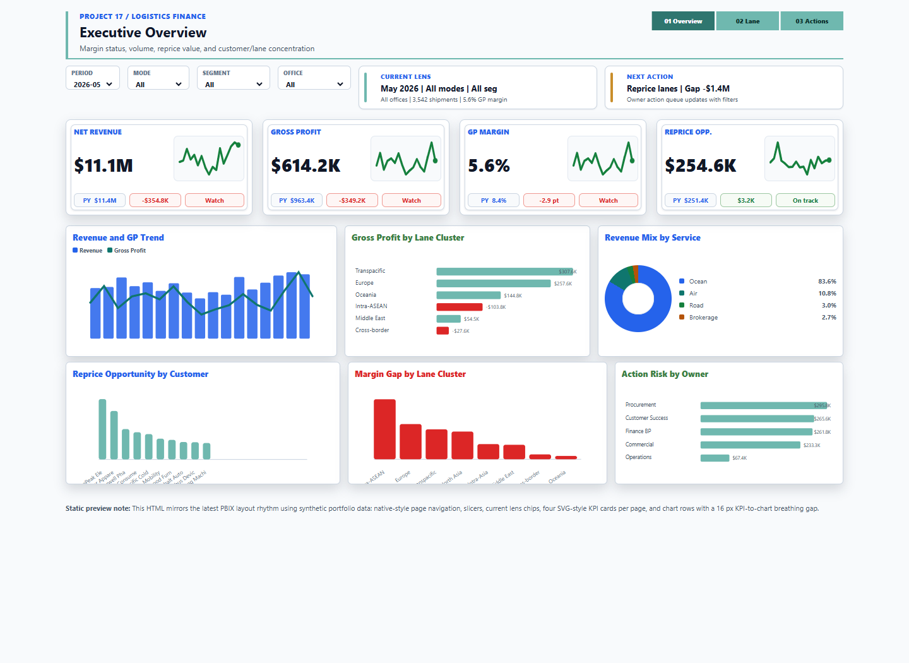

Which trade lanes dilute margin, how much repricing exposure is at risk, and which commercial or operations owner should act next?
Power BI commercial finance
Logistics Trade Lane Profitability
Lane-level profitability dashboard for revenue, gross profit, shipment volume, repricing exposure, and owner action queues. The preview now uses the final project dashboard source so recruiters can interact with the actual artifact, not a generic mockup.

Interactive preview
Open full screenThree-tab dashboard covering executive overview, trade lane margin, cost-driver issues, and action queue ownership from synthetic logistics finance data.
Revenue, cost, gross profit, margin, shipments, cost per shipment, repricing exposure, and action risk reconcile before publishing.
This portfolio preview uses synthetic or anonymized data to demonstrate FP&A profitability and business-partnering logic without exposing company-confidential information.